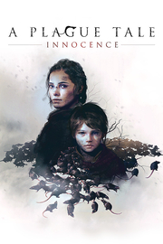

A Plague Tale: Innocence
Detalles
 |
|
| Tiempo de juego | No Jugado |
| Última actividad | Nunca |
| Añadido | 18/11/2025 5:40:52 |
| Modificado | 18/11/2025 5:41:15 |
| Estado de finalización | Not Played |
| Librería | Playnite |
| Fuente | 4TB TANK |
| Plataforma | PC (Windows) |
| Fecha de lanzamiento | 14/05/2019 |
| Puntuación de la Comunidad | 92 |
| Puntuación de la Crítica | 81 |
| Puntuación de usuario | |
| Género | Acción Aventura |
| Desarrollador | Asobo Studio |
| Editor | Focus Entertainment |
| Característica | Cloud Saves Compat. Total Con Mando Cromos De Logros De Préstamo Familiar Remote Play En Móvil Remote Play En Tableta Remote Play En TV Un Jugador |
| Enlaces | Punto de encuentro Discusiones Guías Noticias Página de la tienda PCGamingWiki Logros |
| Tag | Acción Ambientales Aventura Buena trama Emocionales Fantasía oscura Gran banda sonora Históricos Medievales Oscuros Posapocalípticos Protagonista femenina Puzles Sigilo Simulador de caminar Supervivencia Tercera persona Terror Un jugador Violentos |
Descripción

Sigue la lúgubre historia de la joven Amicia y su hermano pequeño Hugo en un viaje por los momentos más oscuros de la historia. Perseguidos por la Inquisición y rodeados de imparables enjambres de ratas, Amicia y Hugo aprenderán a entenderse y a confiar el uno en el otro, y lucharán contra viento y marea por sobrevivir y encontrar un propósito en este mundo cruel y despiadado.

Corre el año 1348. La peste negra asola el Reino de Francia. La Inquisición persigue a Amicia y a su hermano pequeño Hugo a través de aldeas destrozadas por la enfermedad. En su camino, tendrán que unir fuerzas con otros niños y utilizar la luz y el fuego para escapar de los enjambres de ratas. Con el vínculo que une sus destinos como única ayuda, tendrán que enfrentarse a horrores inefables en su lucha por sobrevivir.
Su aventura da comienzo... y la inocencia toca a su fin.